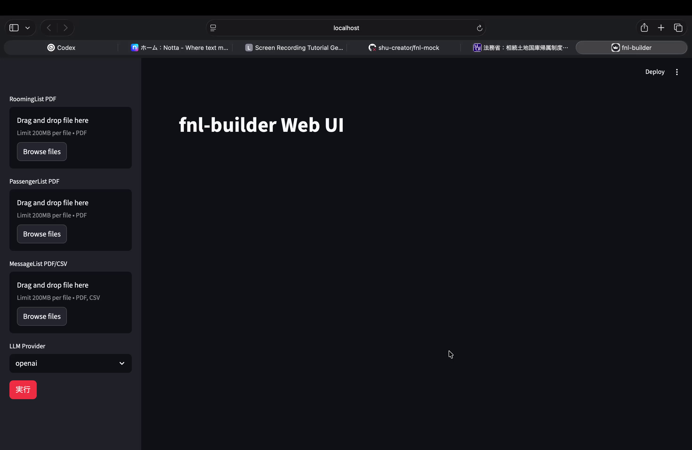
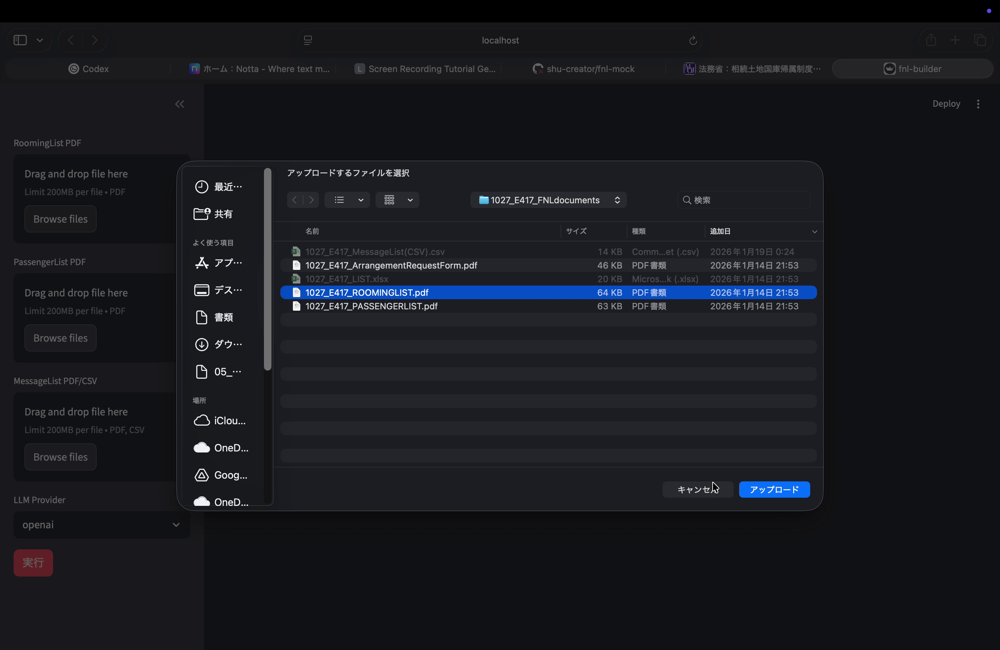
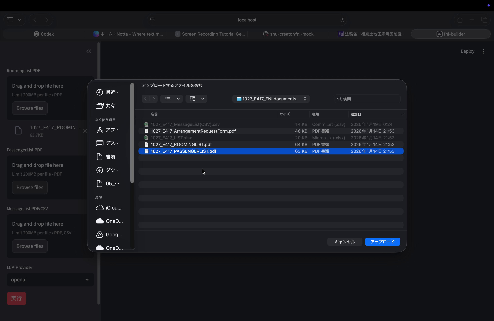
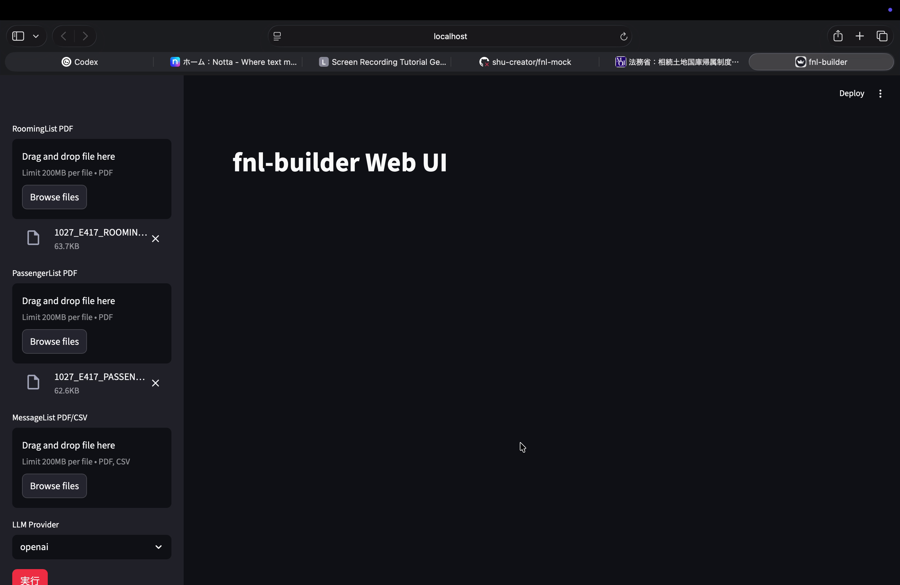
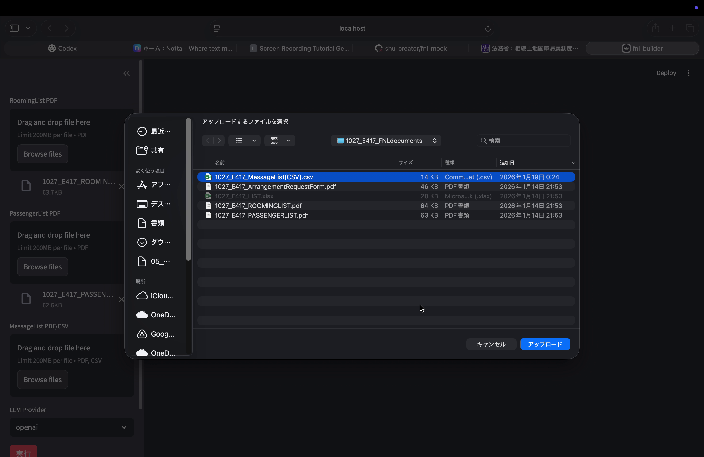
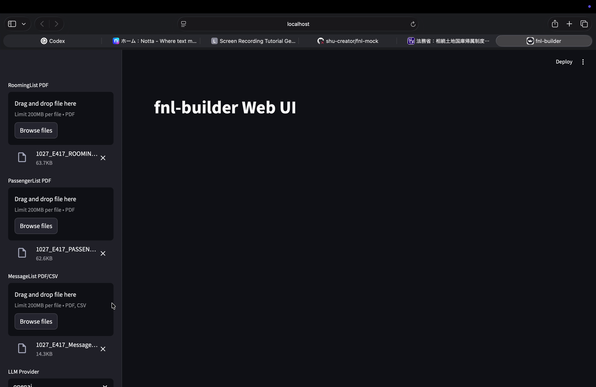
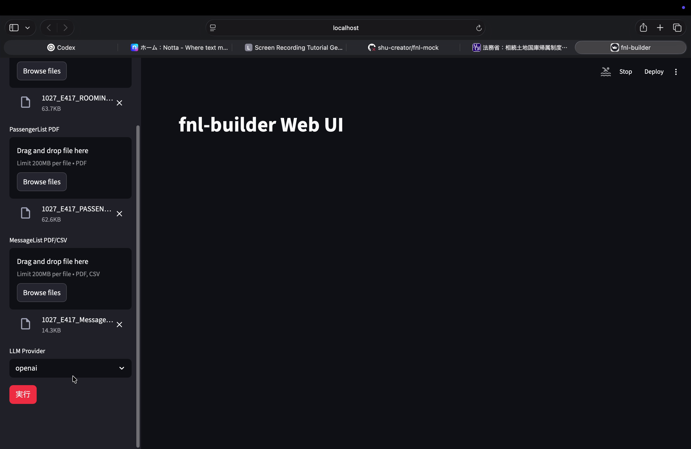
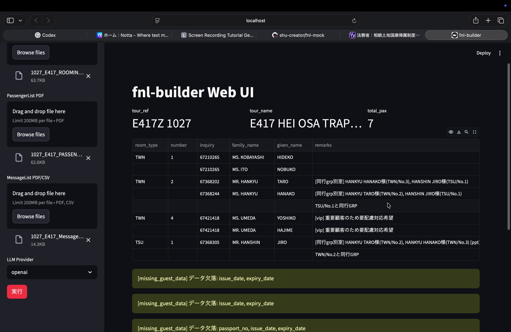
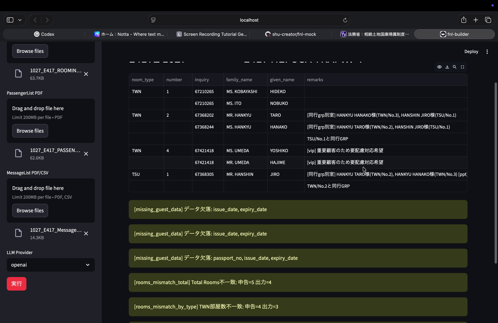
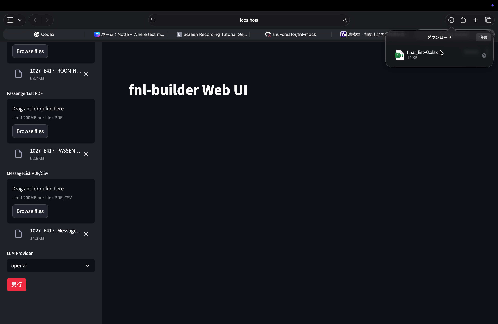

操作を開始する前に、以下の3種類のファイルを手元に用意してください。
| ファイル種別 | 形式 | ファイル名例 | 説明 |
|---|---|---|---|
| RoomingList | 1027_E417_ROOMINGLIST.pdf | 部屋割り表（ルームタイプ、ゲスト名、問い合わせ番号等） | |
| PassengerList | 1027_E417_PASSENGERLIST.pdf | 乗客名簿（氏名、パスポート情報等） | |
| MessageList | PDF または CSV | 1027_E417_MessageList(CSV).csv | メッセージリスト（特記事項の原文） |
openai のまま）final_list-*.xlsx）が自動ダウンロードされる所要時間の目安: ファイルアップロードから Excel ダウンロードまで、LLM処理を含めて数十秒〜数分程度。
ブラウザのアドレスバーに localhost のURLを入力してアクセスします。「fnl-builder Web UI」というタイトルが表示されます。
左側のサイドバーに以下の4つの入力エリアがあることを確認してください。
一番下に赤い「実行」ボタンがあります。

左サイドバーの一番上にある「RoomingList PDF」セクションの「Browse files」ボタンをクリックします。
ファイル選択ダイアログが開くので、該当のルーミングリストPDFファイルを選択し、「アップロード」をクリックします。

アップロードが完了すると、ファイル名とサイズが表示されます（例: 1027_E417_ROOMIN... 63.7KB）。ファイル名の右側の × ボタンで削除・差し替えが可能です。
「PassengerList PDF」セクションの「Browse files」ボタンをクリックし、同様にパッセンジャーリストPDFを選択・アップロードします。

アップロード完了後、ファイル名とサイズが表示されます（例: 1027_E417_PASSEN... 62.6KB）。

「MessageList PDF/CSV」セクションの「Browse files」ボタンをクリックし、メッセージリストファイルを選択・アップロードします。PDF形式とCSV形式の両方に対応しています。

3つすべてのファイルがアップロードされた状態を確認します。

サイドバーの最下部にある「LLM Provider」ドロップダウンを確認します。通常は openai が選択されています。特に指示がない限り、変更する必要はありません。
サイドバーの一番下にある赤い「実行」ボタンをクリックします。処理が開始されると、右上に「Stop」ボタンが表示されます。

処理中は以下の工程が順に実行されます。
処理が完了すると、メイン画面にツアー情報と名簿テーブルが表示されます。

| 項目 | 説明 | 例 |
|---|---|---|
tour_ref | ツアーリファレンス番号 | E417Z 1027 |
tour_name | ツアー名 | E417 HEI OSA TRAP... |
total_pax | 総人数 | 7 |
| カラム名 | 内容 |
|---|---|
room_type | 部屋タイプ（TWN, TSU等） |
number | 枝番 |
inquiry | 問い合わせ番号 |
family_name | 姓 |
given_name | 名 |
remarks | 統合済み特記事項（LLM抽出 + ルールベース候補の統合結果） |
remarks カラムに表示される内容が、fnl-builder が抽出・構造化した特記事項です。ここに表示されている内容が最終 Excel にも反映されます。
結果テーブルの下部に、黄色またはオレンジ色の警告メッセージが表示される場合があります。これらはデータの整合性チェック結果です。

| 警告 | 意味 | 対応 |
|---|---|---|
[missing_guest_data] |
ゲストデータに欠損がある（例: issue_date, expiry_date, passport_no） |
パスポート情報が未入力のゲストがいる。PassengerListの元データを確認。 |
[rooms_mismatch_total] |
RoomingList の部屋数合計が申告数と一致しない | RoomingList の部屋数と申込総数を突合。例: 「Total Rooms不一致: 申告=5 出力=4」 |
[rooms_mismatch_by_type] |
部屋タイプ別の数が一致しない | 例: 「TWN部屋数不一致: 申告=4 出力=3」。RoomingList原本と照合。 |
処理完了後、ブラウザの右上にダウンロード通知が表示され、final_list-*.xlsx という名前の Excel ファイルが自動的にダウンロードされます。

ダウンロードされたファイルが最終名簿（FNL）です。ファイル名の末尾の数字（例: final_list-6.xlsx）は連番であり、同じセッション内で複数回実行した場合に増加します。
fnl-builder は以下の命名規則のファイルを想定しています。
| 種別 | 命名パターン | 例 |
|---|---|---|
| RoomingList | {受付番号}_{コース}_ROOMINGLIST.pdf | 1027_E417_ROOMINGLIST.pdf |
| PassengerList | {受付番号}_{コース}_PASSENGERLIST.pdf | 1027_E417_PASSENGERLIST.pdf |
| MessageList (CSV) | {受付番号}_{コース}_MessageList(CSV).csv | 1027_E417_MessageList(CSV).csv |
| MessageList (PDF) | {受付番号}_{コース}_MessageList.pdf | 1027_E417_MessageList.pdf |
コースコード（例: E417）からアルファベットプレフィックスを除去した数値部分（417）で、コース別の抽出補足ルールが自動的に適用されます。
| 症状 | 原因 | 対処法 |
|---|---|---|
| 「実行」後に何も表示されない | LLM API の接続エラー、またはファイル形式の不一致 | LLM Provider の設定を確認。ブラウザの開発者コンソール（F12）でエラーメッセージを確認。 |
| remarks が空欄のゲストが多い | MessageList にそのゲストに関する特記事項がない。または who_id の紐付けが失敗している。 | MessageList の原本を確認し、問い合わせ番号-枝番がRoomingListと一致しているか確認。 |
[missing_guest_data] 警告が大量に出る |
PassengerList のPDF解析でパスポート情報が読み取れていない | PassengerList PDFの品質（スキャン解像度、文字の鮮明さ）を確認。OCR品質が低い場合は、より鮮明なPDFを用意する。 |
[rooms_mismatch] 警告が出る |
RoomingList の部屋数とPassengerList の人数に不整合がある | RoomingList 原本の部屋数・タイプを確認。手配確認書（ArrangementRequestForm）との整合も確認。 |
| Excel がダウンロードされない | 処理中にエラーが発生した、またはブラウザのポップアップブロック | ブラウザのダウンロード設定・ポップアップブロックを確認。再度「実行」を試す。 |